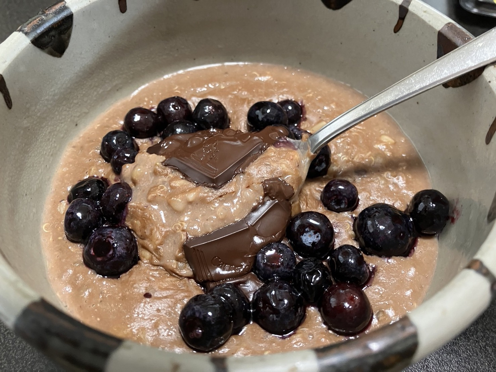

GOATmeal

Description
This is the greatest original overnight oatmeal recipe of all time, refined over the course of years. There are many ways you can "finish" the oatmeal, from adding fresh fruit to a spoonful of almond butter, etc. Enjoy.
Ingredients
- 1 scant cup (about 200ml) of whole grains of choice. I use about 100 ml of whole oat groats, 50 ml of whole barley, and 50ml of whole buckwheat (or any other whole grain you like).
- 8 dried dates, chopped well.
- 2.5 cups unsweetened soy milk
- 2.5 cups water
- 1 tsp cinnamon powder
- 1 tsp cardamom powder
- 1/4 tsp powdered cloves
- 1/4 tsp nutmeg powder
- 1/8 tsp ginger powder
- 1 tsp unsweetened cocoa powder
- 2 squares of 80%+ dark chocolate
Steps
- Rinse and soak grains together with plenty of water for 24 hours. Drain and rinse.
- Heat soymilk and water together in a medium-size pot. Do not cover.
- As liquids heat, add chopped dates and all spices except cocoa powder. Whisk until well blended.
- As soon as liquids start to boil, lower heat to lowest setting and add grains.
- Continue to heat mixture for 5-10 minutes, stirring frequently.
- Turn heat off, cover with lid, and allow to sit overnight.
- The next morning, stir oatmeal, portion off about a cup for breakfast, and refrigerate the rest.
- You can reheat your breakfast portion if you like, or eat it cool in warmer weather.
- I add the teaspoon of cocoa powder and whisk while I reheat the oatmeal. Splashes of water can be added to reach desired consistency.
- Finally, add whatever toppings you like. I put the squares of dark chocolate right on top and let the heat of the oatmeal melt them. Blueberries are also recommended.